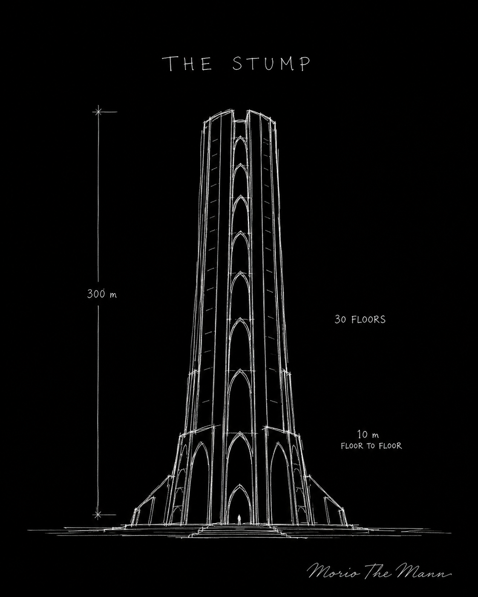
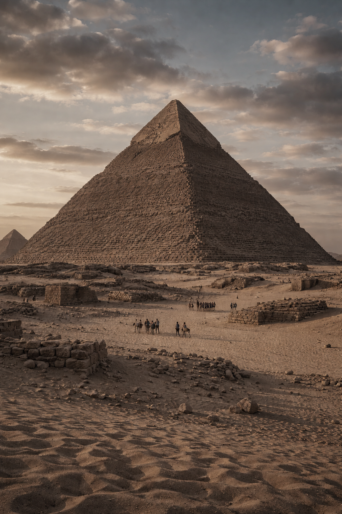
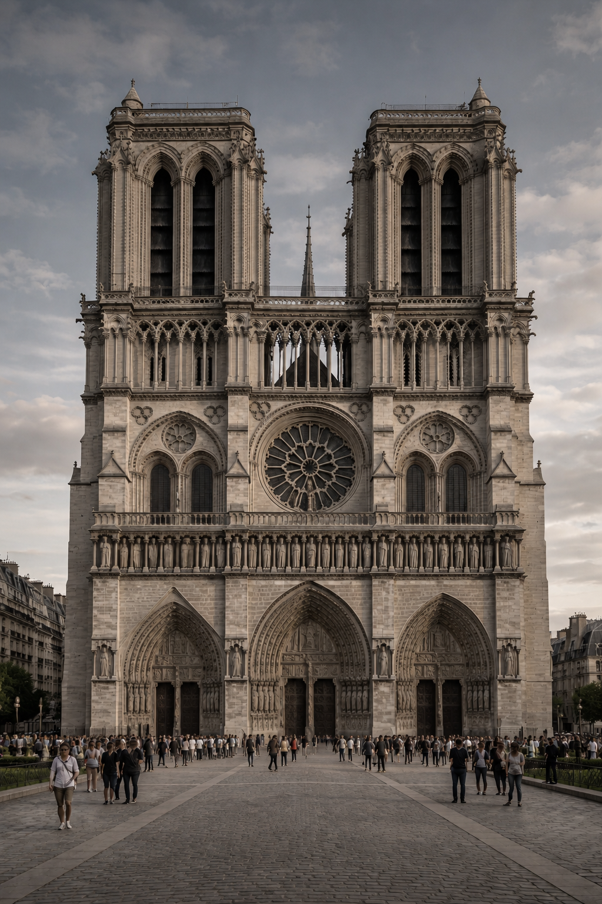
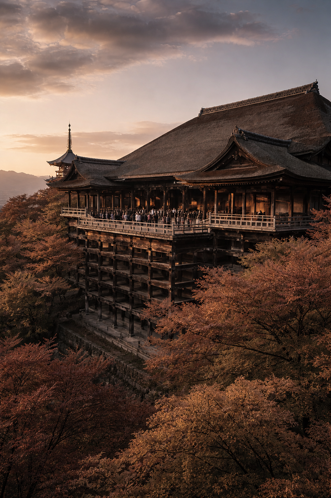

For five thousand years, humankind
has built things made to last forever.
Only in the last fifty years have we forgotten.
Pharaohs built the pyramids. The Catholic Church built Notre-Dame. The Tokugawa shogunate built Nikkō Tōshō-gū. In every age, humanity has given its wealthiest and most powerful the same impulse: to carve one’s existence into the far reaches of time.
This is not vanity. It is a fundamental structure of human consciousness — the drive, even while knowing one’s own finitude, to create something beyond it. An existential need itself.
Yet over the past fifty years, humanity has lost the means to satisfy this need. The world’s UHNWIs hold more wealth than they could ever spend, yet possess no device to convert it into a permanent form. Yachts, jets, luxury residences — all consumables obsolete within a decade. A person with hundreds of billions in assets cannot own a single thing that will last a thousand years.



THE STUMP is a project that revives, in our own age, an act humanity pursued for five thousand years and abandoned only in the last fifty — the act of making something eternal.
And it does so not through religion or the state, but through individual will and capital. Pharaohs built with the power of the state; the Church, with the power of faith. THE STUMP functions as a device through which a single UHNWI, by their own will, carves a “thousand-year trace.”
To own Notre-Dame Cathedral — what THE STUMP offers is an experience synonymous with that.
10m per floor, 9m ceilings. Spaces on the scale of Notre-Dame’s aisle, stacked across all 30 floors. 2,000㎡ per floor — five times the area of a typical ultra-prime residence — configured as a single residence per floor.
This is not a dwelling. It is a palazzo in the sky — the most sublime habitable space on Earth.
300m tall. 30 storeys.
A monument that defines
the Tokyo skyline.
10m floors, 9m ceilings.
About 3× a normal home.
On par with Notre-Dame’s aisle.
One residence per floor.
Pool, gallery and tea room,
all on a single level.
Only 30 on Earth.
Each a wholly independent
palazzo in the sky.
THE STUMP has no true peer. Yet placing it alongside others throws the difference in dimension into sharp relief.
¥200 billion per residence. ¥300 million per tsubo. Construction at ¥100 million per tsubo — built on a budget twenty times the highest standard of any structure now in existence.
But to read these numbers as “cost” is the trap of a short-term gaze. That €850 million (about ¥140 billion) in donations for Notre-Dame’s restoration was gathered within 72 hours shows that the value of millennial architecture exceeds its construction cost by orders of magnitude.
THE STUMP is not a consumable to be demolished in 30 years. Its ¥100-million-per-tsubo cost is not an expense but insurance that physically guarantees a thousand years of LTV. Still standing a millennium from now, still generating value — at which point ¥200 billion becomes the highest-yielding investment in history.
A resident of THE STUMP is not a “buyer” but a Patron. As the Medici sustained the Renaissance, the patrons of THE STUMP inscribe their names into the architectural history of humanity.
A thousand years from now, just as the names of the pyramids’ pharaohs are still recounted, the names of THE STUMP’s patrons will endure, together with the architecture, forever.
THE STUMP OPUS 1 will rise in Tokyo — the safest, most culturally profound, and most underestimated city in the world. The very existence of OPUS 1 becomes the proof; its expansion to London, Dubai, Singapore and New York will come not from us, but at the request of patrons in each country.
In each city, THE STUMP will stand upon the earth like an ancient obelisk — a testament to civilisation.